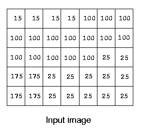
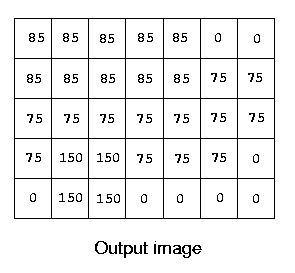

IONU Satellite Imaging, Inc. records and stores very large images using run
length encoding. You are to write a program that reads a compressed image, finds
the edges in the image, as described below, and outputs another compressed image
of the detected edges.
A simple edge detection algorithm sets an output pixel's value to be the maximum
absolute value of the differences between it and all its surrounding pixels in
the input image. Consider the input image below:

The upper left pixel in the output image is the maximum of the values |15-15|, |15-100|, and |15-100|, which is 85. The pixel in the 4th row, 2nd column is computed as the maximum of |175-100|, |175-100|, |175-100|, |175-175|, |175-25|, |175-175|, |175-175|, and |175-25|, which is 150.
Images contain 2 to 1,000,000,000 (109) pixels. All images are encoded using run length encoding (RLE). This is a sequence of pairs, containing pixel value (0-255) and run length (1-109). Input images have at most 1,000 of these pairs. Successive pairs have different pixel values. All lines in an image contain the same number of pixels.
Input consists of information for one or more images. Each image starts with
the width, in pixels, of each image line. This is followed by the RLE pairs, one
pair per line. A line with 0 0 indicates the end of the data for that image. An
image width of 0 indicates there are no more images to process. The first image
in the example input encodes the 5x7 input image above.
7 15 4 100 15 25 2 175 2 25 5 175 2 25 5 0 0 10 35 500000000 200 500000000 0 0 3 255 1 10 1 255 2 10 1 255 2 10 1 255 1 0 0 0
7 85 5 0 2 85 5 75 10 150 2 75 3 0 2 150 2 0 4 0 0 10 0 499999990 165 20 0 499999990 0 0 3 245 9 0 0 0